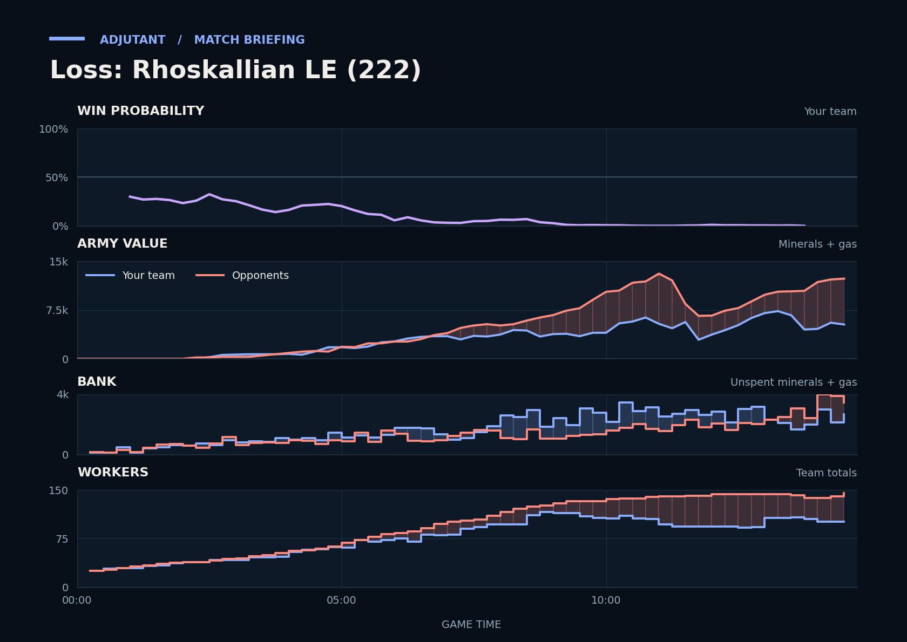

Loss: Rhoskallian LE (222)
Provisional debrief. The full report (timeline, insights and analysis) is being generated.

Cached narration uses different analysis inputs (facts, engine notes, prompts or model settings). It has not been regenerated for this report.
**Loss.** In the last fight near Scallop's natural, TraderJoe had 2.8x Scallop's army going in, built on more income.
**Why**
- 4:43–5:15: Ahead on army going in, you lost more than you killed mid-map; their income rose to about 4,400.
- 8:23–9:41: Going in behind on army, Scallop lost 8 SCVs and an Orbital Command, leaving a single town hall.
- E 13:10–14:25: Scallop traded army evenly but lost 14 SCVs and a town hall to TraderJoe's Liberators, Siege Tanks and a Viking.
Current engine analysis: Loss. Review 5:43–6:15: TakeTheTip lost 7 Drones to Hellions, even though the fighting went your way (1,050 killed, 550 lost). The biggest fight came at 10:15–11:55 (9,950 lost, 10,525 killed).